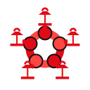

Halay Halkası · küçük boyut sürümü
Beş kol halka kurar, her bağlantıda komşu kolu kavrayan bir el (yuvarlak) ve elinde bir fener var. Simge (koyu yuvarlak köşeli zemin) kendi zeminini taşır; işaret koyu zeminler için; tek renk ve beyaz sürümlerde fener camları boşluk olur.
Simge, gerçek boyutlar (SVG)
1624324864128256
Tarayıcı sekmesinde
Modelen · Türkçenin yapay zekâsı
Sürümler

işaret · koyutek renk · açık

beyaz · kırmızıtek renk · koyu
Üst çubukta
modelen
modelen